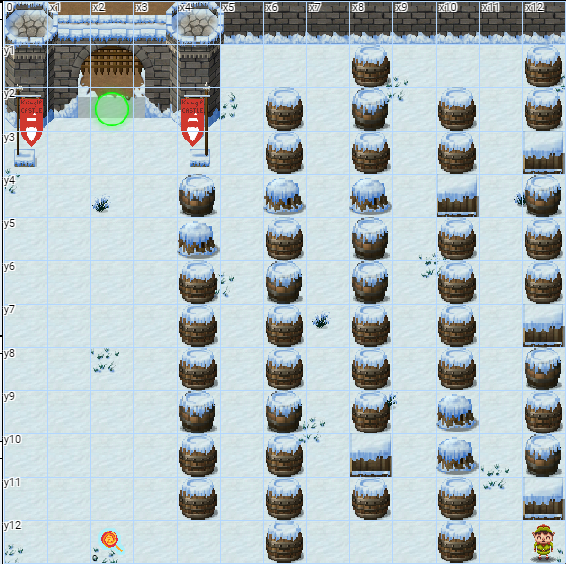

Program the elf to the end goal in no more than 7 lines of code and no more than 6 elf command/function execution statements in your code.

for (var i = 0; i < 5; i++) {
elf.moveLeft(3);
if (i % 2 == 0)
elf.moveUp(11);
else if (i % 2 == 1)
elf.moveDown(11);
}
Here I used a for loop for the constant moving up and down on this level. Because running into an obstacle has no negative impact, I used elf.moveLeft(3) to cover all leftward movements - while still in the maze you will simply bump into a barrel then move up or down and once out of the maze, 3 is the number of spaces you must move to collect the lollipop and align with the green circle. I used i%2 in my conditionals so that every time the for loop incremented it would alternate between moving up or down.